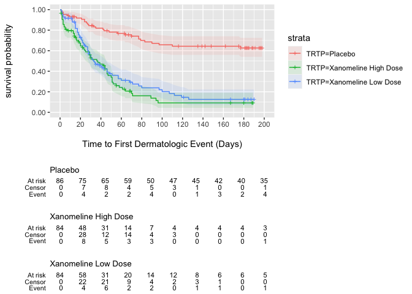

The goal of visR is to enable fit-for-purpose, reusable clinical and medical research focused visualizations and tables with sensible defaults and based on sound graphical principles.
Motivation
By using a common package for visualising data analysis results in the clinical development process, we want to have a positive influence on
- choice of visualisation by making it easy explore different visualisation and to use impactful visualisations fit-for-purpose
- effective visual communication by making it easy to implement best practices
We are not judging on what visualisation you chose for your research question, but want to facilitate and support good practice.
You can read more about the philosophy and architecture in the repo wiki.
Installation
The easiest way to get visR is to install from CRAN:
install.packages("visR")Install the development version from GitHub with:
# defaults to develop branch
devtools::install_github("openpharma/visR") Examples
Visualization
This is a basic example to demonstrate how the API can be used to add layers to a visualization. This example demonstrates a time-to-event analysis. The example calculates and then plots stratified Kaplan-Meier by treatment. It is possible to add uncertainty intervals, censoring information, and a risk table using additional functions.
library(visR)
library(ggplot2)
theme_set(theme_minimal())
adtte %>%
estimate_KM(strata = "TRTP", conf.int = 0.90) %>%
visr(legend_position = "right", x_unit = "Days") %>%
add_CI(style = "ribbon") %>%
add_CNSR(shape = 3, size = 1) %>%
add_risktable(
statlist = c("n.risk", "n.event", "n.censor"),
label = c("At risk", "Event", "Censor")
)
Contributing
Please note that the visR project is released with a Contributor Code of Conduct. By contributing to this project, you agree to abide by its terms. Thank you to all contributors:
@AlexandraP-21, @ardeeshany, @bailliem, @ddsjoberg, @epijim, @gdario, @joanacmbarros, @lcomm, @prabhushanmup, @rebecca-albrecht, @SHAESEN2, @timtreis, @cschaerfe, @AlexandraP-21